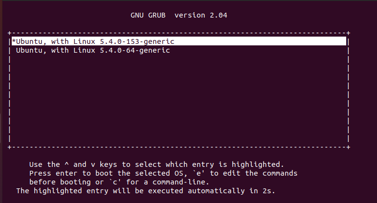

<!DOCTYPE html>
<html lang="zh-CN" data-default-color-scheme=&#34;auto&#34;>


<head>
  <meta charset="UTF-8">
  <link rel="apple-touch-icon" sizes="76x76" href="/img/favicon.png">
  <link rel="icon" href="/img/bg/panda.jpg">
  <meta name="viewport"
        content="width=device-width, initial-scale=1.0, maximum-scale=1.0, user-scalable=no, shrink-to-fit=no">
  <meta http-equiv="x-ua-compatible" content="ie=edge">
  
  <meta name="theme-color" content="#2f4154">
  <meta name="description" content="">
  <meta name="author" content="Weipp">
  <meta name="keywords" content="">
  
  <title>ConfZNS分析 - Weipp&#39;s blog</title>

  <link  rel="stylesheet" href="https://cdn.jsdelivr.net/npm/bootstrap@4.6.0/dist/css/bootstrap.min.css" />


  <link  rel="stylesheet" href="https://cdn.jsdelivr.net/npm/github-markdown-css@4.0.0/github-markdown.min.css" />
  <link  rel="stylesheet" href="/lib/hint/hint.min.css" />

  
    
    
      
      <link  rel="stylesheet" href="https://cdn.jsdelivr.net/npm/highlight.js@10.7.2/styles/github-gist.min.css" />
    
  

  
    <link  rel="stylesheet" href="https://cdn.jsdelivr.net/npm/@fancyapps/fancybox@3.5.7/dist/jquery.fancybox.min.css" />
  


<!-- 主题依赖的图标库，不要自行修改 -->

<link rel="stylesheet" href="//at.alicdn.com/t/font_1749284_ba1fz6golrf.css">


<link rel="stylesheet" href="//at.alicdn.com/t/font_1736178_kmeydafke9r.css">


<link  rel="stylesheet" href="/css/main.css" />

<!-- 自定义样式保持在最底部 -->

  
<link rel="stylesheet" href="//cdn.jsdelivr.net/gh/bynotes/texiao/source/css/gundongtiao.css# 滚动条颜色.css">
<link rel="stylesheet" href="//cdn.jsdelivr.net/gh/bynotes/texiao/source/css/shubiao.css# 鼠标指针.css">


  <script id="fluid-configs">
    var Fluid = window.Fluid || {};
    var CONFIG = {"hostname":"example.com","root":"/","version":"1.8.11","typing":{"enable":true,"typeSpeed":100,"cursorChar":"_","loop":false},"anchorjs":{"enable":true,"element":"h1,h2,h3,h4,h5,h6","placement":"right","visible":"hover","icon":"§"},"progressbar":{"enable":true,"height_px":3,"color":"#29d","options":{"showSpinner":false,"trickleSpeed":100}},"copy_btn":true,"image_zoom":{"enable":true,"img_url_replace":["",""]},"toc":{"enable":true,"headingSelector":"h1,h2,h3,h4,h5,h6","collapseDepth":0},"lazyload":{"enable":true,"loading_img":"/img/loading.gif","onlypost":false,"offset_factor":2},"web_analytics":{"enable":false,"baidu":null,"google":null,"gtag":null,"tencent":{"sid":null,"cid":null},"woyaola":null,"cnzz":null,"leancloud":{"app_id":null,"app_key":null,"server_url":null}},"search_path":"/local-search.xml"};
  </script>
  <script  src="/js/utils.js" ></script>
  <script  src="/js/color-schema.js" ></script>
<meta name="generator" content="Hexo 5.4.0"></head>


<body>
  <header style="height: 70vh;">
    <nav id="navbar" class="navbar fixed-top  navbar-expand-lg navbar-dark scrolling-navbar">
  <div class="container">
    <a class="navbar-brand"
       href="/">&nbsp;<strong>Weipp's blog</strong>&nbsp;</a>

    <button id="navbar-toggler-btn" class="navbar-toggler" type="button" data-toggle="collapse"
            data-target="#navbarSupportedContent"
            aria-controls="navbarSupportedContent" aria-expanded="false" aria-label="Toggle navigation">
      <div class="animated-icon"><span></span><span></span><span></span></div>
    </button>

    <!-- Collapsible content -->
    <div class="collapse navbar-collapse" id="navbarSupportedContent">
      <ul class="navbar-nav ml-auto text-center">
        
          
          
          
          
            <li class="nav-item">
              <a class="nav-link" href="/">
                <i class="iconfont icon-home-fill"></i>
                Home
              </a>
            </li>
          
        
          
          
          
          
            <li class="nav-item dropdown">
              <a class="nav-link dropdown-toggle" target="_self" role="button"
                 data-toggle="dropdown" aria-haspopup="true" aria-expanded="false">
                <i class="iconfont icon-books"></i>
                Files
              </a>
              <div class="dropdown-menu" aria-labelledby="navbarDropdown">
                
                  
                  
                  
                  <a class="dropdown-item" href="/archives/">
                    <i class="iconfont icon-archive-fill"></i>
                    Archive
                  </a>
                
                  
                  
                  
                  <a class="dropdown-item" href="/categories/">
                    <i class="iconfont icon-category-fill"></i>
                    Category
                  </a>
                
                  
                  
                  
                  <a class="dropdown-item" href="/tags/">
                    <i class="iconfont icon-tags-fill"></i>
                    Tag
                  </a>
                
              </div>
            </li>
          
        
          
          
          
          
            <li class="nav-item">
              <a class="nav-link" href="/about/">
                <i class="iconfont icon-user-fill"></i>
                About me
              </a>
            </li>
          
        
          
          
          
          
            <li class="nav-item">
              <a class="nav-link" href="/links/">
                <i class="iconfont icon-link-fill"></i>
                Links
              </a>
            </li>
          
        
        
          <li class="nav-item" id="search-btn">
            <a class="nav-link" target="_self" data-toggle="modal" data-target="#modalSearch">&nbsp;<i
                class="iconfont icon-search"></i>&nbsp;</a>
          </li>
        
        
          <li class="nav-item" id="color-toggle-btn">
            <a class="nav-link" target="_self">&nbsp;<i
                class="iconfont icon-dark" id="color-toggle-icon"></i>&nbsp;</a>
          </li>
        
      </ul>
    </div>
  </div>
</nav>

    <div class="banner" id="banner" parallax=true
         style="background: url('https://github.com/Weipp7/picture/assets/73998546/48370dd9-54f9-4400-b44a-d1ae6d30500a') no-repeat center center;
           background-size: cover;">
      <div class="full-bg-img">
        <div class="mask flex-center" style="background-color: rgba(0, 0, 0, 0.3)">
          <div class="page-header text-center fade-in-up">
            <span class="h2" id="subtitle" title="ConfZNS分析">
              
            </span>

            
              <div class="mt-3">
  
  
    <span class="post-meta">
      <i class="iconfont icon-date-fill" aria-hidden="true"></i>
      <time datetime="2023-07-22 21:28" pubdate>
        2023年7月22日 晚上
      </time>
    </span>
  
</div>

<div class="mt-1">
  
    
    <span class="post-meta mr-2">
      <i class="iconfont icon-chart"></i>
      8.5k 字
    </span>
  

  
    
    <span class="post-meta mr-2">
      <i class="iconfont icon-clock-fill"></i>
      
      
      101
       分钟
    </span>
  

  
  
    
      <!-- 不蒜子统计文章PV -->
      <span id="busuanzi_container_page_pv" style="display: none">
        <i class="iconfont icon-eye" aria-hidden="true"></i>
        <span id="busuanzi_value_page_pv"></span> 次
      </span>
    
  
</div>

            
          </div>

          
        </div>
      </div>
    </div>
  </header>

  <main>
    
      

<div class="container-fluid nopadding-x">
  <div class="row nomargin-x">
    <div class="d-none d-lg-block col-lg-2"></div>
    <div class="col-lg-8 nopadding-x-md">
      <div class="container nopadding-x-md" id="board-ctn">
        <div class="py-5" id="board">
          <article class="post-content mx-auto">
            <!-- SEO header -->
            <h1 style="display: none">ConfZNS分析</h1>
            
            <div class="markdown-body">
              <p>最近的学校项目涉及ZNS（Zone NameSpace）SSD，需要我们了解ZNS的实现机制以及confZNS的原理，其中涉及的知识之庞杂，代码量之多，非我等小可所能完全吸收。在这里浅浅分析一下。</p>
<h2 id="SSD设备和ZNS协议-background"><a href="#SSD设备和ZNS协议-background" class="headerlink" title="SSD设备和ZNS协议 background"></a>SSD设备和ZNS协议 background</h2><p>当谈论SSD设备时，它是一种固态存储设备，全称为“Solid State Drive”，它不像传统的机械硬盘使用旋转的磁盘和机械臂来读写数据，而是使用闪存芯片来存储数据。SSD具有许多优点，例如更快的读写速度、更低的能耗、更小的体积和更高的抗震性能。它们在现代计算机和数据中心中广泛应用，能够显著提升系统性能和响应速度。</p>
<p>至于ZNS协议，它是“Zoned Namespace”（分区命名空间）的缩写。ZNS是一种NVMe（Non-Volatile Memory Express）协议的扩展，它允许SSD将存储空间划分为多个固定大小的分区或“Zone”。每个Zone内部的数据可以进行连续的顺序写入，但不能进行随机写入。ZNS协议的主要目的是优化SSD设备的写入性能，特别是在大规模数据写入场景下。</p>
<p>那么问题来了，NVMe协议是什么？他们和传统的SATA和SAS协议的异同点是什么？来一起看下</p>
<h3 id="传统协议和ZNS协议"><a href="#传统协议和ZNS协议" class="headerlink" title="传统协议和ZNS协议"></a>传统协议和ZNS协议</h3><p><strong>SATA协议（Serial ATA）</strong>：<br>SATA协议是一种用于连接计算机主板和存储设备（如硬盘和固态硬盘）之间的接口协议。它是一种串行传输的接口，用于替代传统的并行ATA（IDE）接口。SATA接口通常用于连接传统硬盘和低端固态硬盘，提供中等的数据传输速率和较低的延迟。</p>
<p><strong>SAS协议（Serial Attached SCSI）</strong>：<br>SAS协议是一种用于连接存储设备和服务器之间的接口协议。它是一种串行传输的接口，基于SCSI标准，并支持高可靠性和高性能的数据传输。SAS接口通常用于连接高性能的企业级硬盘和磁带库等设备，提供更高的数据传输速率和更低的延迟。</p>
<p><strong>NVMe协议（Non-Volatile Memory Express）</strong>：<br>NVMe协议是一种用于连接固态存储设备（如SSD）和计算机系统之间的接口协议。它是一种高性能、低延迟的接口，专门为固态存储设备而设计。NVMe接口采用PCI Express总线，并通过多队列和多核心技术来支持并发操作，提供更快的数据传输速率和更低的延迟。</p>
<p><strong>ZNS协议（Zoned Namespace）</strong>：<br>ZNS协议是在NVMe协议基础上扩展而来的，用于管理分区的固态存储设备。ZNS将物理存储空间划分为多个逻辑分区（命名空间），每个分区内的写入必须按照顺序进行，类似于磁带的顺序写。ZNS可以提高设备的写入效率，同时减少写入时的随机寻址，适用于写入密集型的工作负载。</p>
<p>有些晕了…来一个表格似乎更加直观</p>
<table>
<thead>
<tr>
<th></th>
<th>SATA</th>
<th>NVMe</th>
<th>ZNS</th>
</tr>
</thead>
<tbody><tr>
<td>传输接口</td>
<td>串行传输的接口协议</td>
<td>基于PCI Express的高速串行接口</td>
<td>在NVMe协议基础上进行扩展的，用于管理分区的固态存储设备</td>
</tr>
<tr>
<td>性能特点</td>
<td>适用于一般桌面应用和企业级应用，提供中等性能和可靠性</td>
<td>性能方面有显著优势，提供更高的数据传输速率和更低的延迟，适用于高性能计算和数据中心应用</td>
<td>同NVMe</td>
</tr>
<tr>
<td>适用场景</td>
<td>连接传统硬盘和低端固态硬盘，适用于一般桌面和中小型企业服务器</td>
<td>用于高性能计算和数据中心应用，连接高性能固态硬盘（SSD）</td>
<td>适用于写入密集型的工作负载，可以提高设备的写入效率。</td>
</tr>
<tr>
<td>命名空间</td>
<td>无</td>
<td>支持命名空间的概念，允许将物理存储空间划分为多个逻辑单元，每个命名空间都可以被视为一个独立的存储设备，提供更灵活的数据管理方式。</td>
<td>同NVMe</td>
</tr>
<tr>
<td>设备类型</td>
<td>用于连接传统硬盘和企业级硬盘</td>
<td>连接固态硬盘（SSD）</td>
<td>连接固态硬盘（SSD）</td>
</tr>
<tr>
<td>性价比</td>
<td>相对较便宜，适用于预算有限的用户</td>
<td>性能更高，但价格也相对较高</td>
<td>同NVMe</td>
</tr>
</tbody></table>
<h3 id="ZNS协议解决的问题"><a href="#ZNS协议解决的问题" class="headerlink" title="ZNS协议解决的问题"></a>ZNS协议解决的问题</h3><p>ZNS-SSD的出现主要是为了解决传统的Block Interface SSD（例如使用NVMe协议的Flash SSD）在某些场景下面临的一些问题。以下是一些传统Block Interface SSD存在的问题：</p>
<ol>
<li>写入效率不高：传统SSD使用固定大小的块（通常为4KB或8KB），在写入时必须按照块为单位进行写入。对于小于一个块大小的数据写入，需要进行块对齐和补齐操作，导致写入效率不高。</li>
<li>垃圾回收和写放大：由于传统SSD的块大小固定，写入和擦除操作都是以块为单位进行的。当进行部分块的更新或删除时，需要先将整个块读取到内存中，进行修改后再整块写回，导致写放大问题和垃圾回收的开销。</li>
<li>寿命问题：由于传统SSD的擦除操作是以块为单位进行的，频繁的小块写入和擦除会导致SSD的寿命缩短。</li>
<li>数据分布不均衡：传统SSD中的块分配和擦除管理策略可能导致数据在不同块之间的分布不均衡，称为写入热点问题。</li>
<li>随机写性能：传统SSD在随机写入操作时可能面临性能下降，尤其是在块擦除和写入操作频繁时。</li>
</ol>
<p>ZNS-SSD通过引入Zoned Namespace（分区命名空间）来解决这些问题。在ZNS-SSD中，存储空间被划分为多个Zone（区域），每个Zone内的写入操作必须按照顺序进行，从而避免了块对齐和补齐的问题。ZNS-SSD支持顺序写入，可以提高写入效率和减少写放大问题。此外，ZNS-SSD还通过合理规划Zone来均衡数据分布，提高随机写性能，并通过管理Zone的方式延长SSD的寿命。因此，ZNS-SSD可以更好地适应写入密集型的工作负载和大规模数据写入场景。</p>
<p>在随机写性能方面，我多查了一些资料。先说结论：在某些特定工作负载下，ZNS-SSD在随机写入性能方面可能会相对优于传统的Block Interface SSD，特别是当数据写入是以较大的连续块为单位进行时。然而，这并不意味着ZNS-SSD在所有随机写入场景下都优于传统SSD。对于小块随机写入，传统SSD可能仍然具有优势。</p>
<ol>
<li>随机写支持方式：<ul>
<li>Block Interface SSD：传统的Block Interface SSD使用逻辑块（Logical Block）作为最小的可寻址单元。随机写操作可以直接在逻辑块级别进行，即可以在任意逻辑块上写入数据，无需关心实际的物理布局。</li>
<li>ZNS SSD：ZNS SSD采用了Zoned Namespace技术，将存储空间划分为一系列称为Zone的连续区域。每个Zone都有固定的容量，且必须按照顺序写入，不支持随机写入。在随机写入数据时，需要将数据写入到当前活动的Zone中，并且在Zone被填满之后，才能切换到下一个Zone进行写入。</li>
</ul>
</li>
<li>随机写性能差异：<ul>
<li>Block Interface SSD：由于Block Interface SSD支持随机写入，因此在随机写入小块数据时表现较好。随机写性能通常以IOPS（每秒I/O操作数）和延迟（响应时间）为主要指标。</li>
<li>ZNS SSD：ZNS SSD在设计上更侧重于优化顺序写性能，因为随机写入会导致Zone切换和写入位置的变化，从而影响性能。在随机写入数据时，ZNS SSD的性能相对较差，尤其是在涉及多个Zone的情况下。因此，对于随机写入工作负载，传统的Block Interface SSD可能表现更好。</li>
</ul>
</li>
</ol>
<p>因此，ZNS SSD的设计是针对特定的工作负载场景，例如冷存储、日志记录等，对于需要大量随机写入的工作负载，传统的Block Interface SSD可能更适合。</p>
<h3 id="ZNS-architect"><a href="#ZNS-architect" class="headerlink" title="ZNS architect"></a>ZNS architect</h3><h4 id="1-核心架构"><a href="#1-核心架构" class="headerlink" title="1. 核心架构"></a>1. 核心架构</h4><p>Zoned Namespace (ZNS) 是一种新型的SSD架构，它将存储空间划分为一系列称为Zone的连续区域，每个Zone都有固定的容量。ZNS架构主要由以下几个组件构成：</p>
<ol>
<li><p>Zone：Zone是ZNS架构的基本单元，它是一段连续的存储空间，具有固定的容量。在ZNS中，数据必须按照顺序写入Zone，而不能随机写入。Zone通常比传统SSD中的块（Block）更大，这有助于减少读-修改-写（Read-Modify-Write）的操作，提高写入性能。</p>
</li>
<li><p>Zone Management：Zone Management负责管理Zone的状态和使用情况。每个Zone都有一个状态，包括空闲、打开（Open）、关闭（Closed）、读写保护（Read-Only）等状态。Zone Management可以实现自动打开和关闭Zone，以便在写入过程中实现数据的顺序写入。此外，Zone Management还负责处理Zone的空间回收和回收策略，以最大程度地减少擦除操作。</p>
</li>
<li><p>Zone Report：Zone Report是用于获取Zone信息的接口，它可以告知主机有关Zone的状态、容量和健康状况等信息。主机可以通过Zone Report来了解SSD的Zone布局，从而更好地进行数据管理和写入优化。</p>
</li>
<li><p>Zoned Block Device：Zoned Block Device是一个抽象层，用于将ZNS架构与主机系统的块设备接口对接。它负责将传统的块设备操作转换为Zone的顺序写入操作。Zoned Block Device可以通过读取Zone Report来确定Zone的写入状态，并将数据按照Zone的规则进行写入，以保证数据的顺序写入特性。</p>
<p></p>
<p></p>
</li>
</ol>
<p>ZNS架构的工作原理是，主机系统通过Zoned Block Device进行数据的写入和读取操作，而Zoned Block Device则利用Zone Management来管理Zone的状态，并保证数据的顺序写入。在写入过程中，主机将数据写入当前打开的Zone，当Zone写满后，Zone Management会自动关闭当前Zone并打开下一个空闲的Zone，从而实现数据的连续写入。当Zone已经关闭且不再接受数据时，主机需要通过Zone Report获取新的可写Zone，并继续写入数据。</p>
<h4 id="2-软件层面的修改"><a href="#2-软件层面的修改" class="headerlink" title="2. 软件层面的修改"></a>2. 软件层面的修改</h4><p>为了评估ZNS带来的好处，对四个重要的软件项目进行的修改和开发工作。具体来说，首先对Linux内核进行了修改，以支持ZNS SSD。其次，修改了f2fs文件系统，以评估在更高级别的存储堆栈层面上进行区域集成的好处。第三，修改了fio基准测试工具，以支持新添加的ZNS特定属性。第四，开发了ZenFS，这是一个新颖的RocksDB存储后端，通过区域控制数据的放置，以评估区域存储的端到端集成的好处。</p>
<blockquote>
<p>We have added support to four major software projects to evaluate the benefits of ZNS. First, we made modifications to the Linux kernel to support ZNS SSDs. Second, we modified the f2fs file system to evaluate the benefits of zone integration at a higher-level storage stack layer. Third, we modified the fio [6] benchmark to support the newly added ZNS-specific attributes. Fourth, we developed ZenFS [25], a novel storage backend for RocksDB that allows control of data placement through zones, to evaluate the benefits of end-to-end integration for zoned storage. We describe the relatively few changes necessary to support ZNS when building upon the existing ZAC/ZBC support for the first three projects [5, 42, 52] (§4.1) and finally detail the architecture of ZenFS (§4.2).</p>
</blockquote>
<p>对以上四个层面的原理在参考论文中已经详细介绍，且跟后续的confZNS原理理解相互独立，在此不再赘述。<del>（我承认zenfs的组件好多，我有些看不下去了）</del></p>
<h2 id="ConfZNS"><a href="#ConfZNS" class="headerlink" title="ConfZNS"></a>ConfZNS</h2><h3 id="background"><a href="#background" class="headerlink" title="background"></a>background</h3><p>ConfZNS模拟器用于探索和理解ZNS固态硬盘（SSD）的设计空间。ConfZNS支持多种ZNS SSD的区域映射方式，并允许从内部设备结构到应用软件的完整堆栈探索。该模拟器具有时间精确性，对于存储研究社区来说是一个多功能工具。文章<a target="_blank" rel="noopener" href="https://dl.acm.org/doi/pdf/10.1145/3579370.3594772">ConfZNS</a>通过与两个不同厂商的真实ZNS SSD进行实验，并与之前一项研究的测量结果进行验证，证明了ConfZNS的有效性。文章还探讨了ConfZNS在使用硬件和软件参数对各种软件（如F2FS、RocksDB和Docker）在不同ConfZNS配置下的性能进行评估和比较的潜力。ConfZNS预计将促进ZNS SSD硬件及其相关软件的优化。</p>
<blockquote>
<p>First, ConfZNS supports diverse zone mappings of ZNS SSD.</p>
<p>Second, ConfZNS is time-accurate.</p>
<p>Third, ConfZNS allows a full stack exploration from the internal device structure to the application software.</p>
</blockquote>
<p>那么confZNS和ZNS的区别是什么？</p>
<p>ConfZNS和ZNS之间的区别在于它们的功能和用途。ZNS 是一种新一代的固态硬盘，通过改变SSD和主机之间的存储管理责任分配，以及利用硬件和软件层面的内部并行性，来解决传统块状存储器的性能和资源相关问题。而ConfZNS是一个用于探索和理解ZNS SSD设计空间的仿真器，它支持各种ZNS SSD的区域映射配置，从SSD内部结构到应用软件的全栈探索，并且具有时间精确度，因此它是存储研究领域的一个多功能工具。</p>
<h3 id="ConfZNS-architect"><a href="#ConfZNS-architect" class="headerlink" title="ConfZNS architect"></a>ConfZNS architect</h3><p>ZNS的组成包括以下几个关键组件：</p>
<h4 id="1-ZNS配置器"><a href="#1-ZNS配置器" class="headerlink" title="1. ZNS配置器"></a>1. ZNS配置器</h4><p>用户通过提供配置文件来灵活配置ZNS固态硬盘的硬件参数，例如zone的大小、区域重置时间以及通道/路向区域的映射等。此外，还可以设置基本的SSD配置参数，如通道/路的数量、芯片的块/页大小、编程/读取/擦除时间、主机接口带宽限制等。</p>
<p>翻一下<a target="_blank" rel="noopener" href="https://github.com/vtess/FEMU/blob/master/hw/femu/zns/zns.c">源码</a>：</p>
<ul>
<li><strong>初始化ZnSSD控制器</strong></li>
<li><strong>配置ZnSSD控制器参数和特性</strong></li>
<li><strong>初始化Zone的几何属性和标识信息</strong></li>
</ul>
<figure class="highlight cpp"><table><tr><td class="gutter hljs"><div class="hljs code-wrapper"><pre><span class="line">1</span><br><span class="line">2</span><br><span class="line">3</span><br><span class="line">4</span><br><span class="line">5</span><br><span class="line">6</span><br><span class="line">7</span><br><span class="line">8</span><br><span class="line">9</span><br><span class="line">10</span><br><span class="line">11</span><br><span class="line">12</span><br><span class="line">13</span><br><span class="line">14</span><br><span class="line">15</span><br><span class="line">16</span><br><span class="line">17</span><br><span class="line">18</span><br><span class="line">19</span><br><span class="line">20</span><br><span class="line">21</span><br><span class="line">22</span><br><span class="line">23</span><br><span class="line">24</span><br><span class="line">25</span><br><span class="line">26</span><br><span class="line">27</span><br><span class="line">28</span><br><span class="line">29</span><br><span class="line">30</span><br><span class="line">31</span><br><span class="line">32</span><br><span class="line">33</span><br><span class="line">34</span><br><span class="line">35</span><br><span class="line">36</span><br><span class="line">37</span><br><span class="line">38</span><br><span class="line">39</span><br><span class="line">40</span><br><span class="line">41</span><br><span class="line">42</span><br><span class="line">43</span><br><span class="line">44</span><br><span class="line">45</span><br><span class="line">46</span><br><span class="line">47</span><br><span class="line">48</span><br><span class="line">49</span><br><span class="line">50</span><br><span class="line">51</span><br><span class="line">52</span><br><span class="line">53</span><br><span class="line">54</span><br><span class="line">55</span><br><span class="line">56</span><br><span class="line">57</span><br><span class="line">58</span><br><span class="line">59</span><br><span class="line">60</span><br></pre></div></td><td class="code"><div class="hljs code-wrapper"><pre><code class="hljs cpp"><br><span class="hljs-comment">// 这个函数用于设置控制器的名称和序列号。在这里，名称设为&quot;FEMU ZNS-SSD Controller&quot;，序列号设为&quot;vZNSSD&quot;。</span><br><span class="hljs-function"><span class="hljs-keyword">static</span> <span class="hljs-keyword">void</span> <span class="hljs-title">zns_set_ctrl_str</span><span class="hljs-params">(FemuCtrl *n)</span></span><br><span class="hljs-function"></span>&#123;<br>    <span class="hljs-keyword">static</span> <span class="hljs-keyword">int</span> fsid_zns = <span class="hljs-number">0</span>;<br>    <span class="hljs-keyword">const</span> <span class="hljs-keyword">char</span> *zns_mn = <span class="hljs-string">&quot;FEMU ZNS-SSD Controller&quot;</span>;<br>    <span class="hljs-keyword">const</span> <span class="hljs-keyword">char</span> *zns_sn = <span class="hljs-string">&quot;vZNSSD&quot;</span>;<br><br>    <span class="hljs-built_in">nvme_set_ctrl_name</span>(n, zns_mn, zns_sn, &amp;fsid_zns);<br>&#125;<br><span class="hljs-comment">// 这个函数用于设置控制器的PCI配置信息。将厂商ID设为Intel（PCI_VENDOR_ID_INTEL），设备ID设为0x5845。</span><br><span class="hljs-function"><span class="hljs-keyword">static</span> <span class="hljs-keyword">void</span> <span class="hljs-title">zns_set_ctrl</span><span class="hljs-params">(FemuCtrl *n)</span></span><br><span class="hljs-function"></span>&#123;<br>    <span class="hljs-keyword">uint8_t</span> *pci_conf = n-&gt;parent_obj.config;<br><br>    <span class="hljs-built_in">zns_set_ctrl_str</span>(n);<br>    <span class="hljs-built_in">pci_config_set_vendor_id</span>(pci_conf, PCI_VENDOR_ID_INTEL);<br>    <span class="hljs-built_in">pci_config_set_device_id</span>(pci_conf, <span class="hljs-number">0x5845</span>);<br>&#125;<br><span class="hljs-comment">// 这个函数用于在控制器启动时设置Zoned Namespace的参数。</span><br><span class="hljs-function"><span class="hljs-keyword">static</span> <span class="hljs-keyword">int</span> <span class="hljs-title">zns_start_ctrl</span><span class="hljs-params">(FemuCtrl *n)</span></span><br><span class="hljs-function"></span>&#123;<br>    <span class="hljs-comment">/* Coperd: let&#x27;s fail early before anything crazy happens */</span><br>    <span class="hljs-built_in">assert</span>(n-&gt;page_size == <span class="hljs-number">4096</span>);<br><br>    <span class="hljs-keyword">if</span> (!n-&gt;zasl_bs) &#123;<br>        n-&gt;zasl = n-&gt;mdts;<br>    &#125; <span class="hljs-keyword">else</span> &#123;<br>        <span class="hljs-keyword">if</span> (n-&gt;zasl_bs &lt; n-&gt;page_size) &#123;<br>            <span class="hljs-built_in">femu_err</span>(<span class="hljs-string">&quot;ZASL too small (%dB), must &gt;= 1 page (4K)\n&quot;</span>, n-&gt;zasl_bs);<br>            <span class="hljs-keyword">return</span> <span class="hljs-number">-1</span>;<br>        &#125;<br>        n-&gt;zasl = <span class="hljs-number">31</span> - <span class="hljs-built_in">clz32</span>(n-&gt;zasl_bs / n-&gt;page_size);<br>    &#125;<br><br>    <span class="hljs-keyword">return</span> <span class="hljs-number">0</span>;<br>&#125;<br><span class="hljs-comment">// 这个函数用于初始化Zoned Namespace的控制器和命名空间。</span><br><span class="hljs-function"><span class="hljs-keyword">static</span> <span class="hljs-keyword">void</span> <span class="hljs-title">zns_init</span><span class="hljs-params">(FemuCtrl *n, Error **errp)</span></span><br><span class="hljs-function"></span>&#123;<br>    NvmeNamespace *ns = &amp;n-&gt;namespaces[<span class="hljs-number">0</span>];<br><br>    <span class="hljs-built_in">zns_set_ctrl</span>(n);<br><br>    <span class="hljs-built_in">zns_init_zone_cap</span>(n);<br><br>    <span class="hljs-keyword">if</span> (<span class="hljs-built_in">zns_init_zone_geometry</span>(ns, errp) != <span class="hljs-number">0</span>) &#123;<br>        <span class="hljs-keyword">return</span>;<br>    &#125;<br><br>    <span class="hljs-built_in">zns_init_zone_identify</span>(n, ns, <span class="hljs-number">0</span>);<br>    <span class="hljs-built_in">zns_init_params</span>(n);<br>&#125;<br><span class="hljs-comment">// 这个函数在控制器退出时释放为Zoned Namespace模式分配的额外资源（例如Zones），但在此代码中函数体为空，表示并没有实际释放资源的操作。</span><br><span class="hljs-function"><span class="hljs-keyword">static</span> <span class="hljs-keyword">void</span> <span class="hljs-title">zns_exit</span><span class="hljs-params">(FemuCtrl *n)</span></span><br><span class="hljs-function"></span>&#123;<br>    <span class="hljs-comment">/*</span><br><span class="hljs-comment">     * Release any extra resource (zones) allocated for ZNS mode</span><br><span class="hljs-comment">     */</span><br>&#125;<br></code></pre></div></td></tr></table></figure>

<p>在代码中，<code>zns_exit</code>函数的函数体是空的，即没有实际的释放资源操作。这可能是因为在当前的代码实现中，并没有为 ZNS 模式分配额外的资源（例如 Zones），或者在控制器退出时不需要特定的资源清理操作。根据参考代码中的数据结构，合理补充 <code>zns_exit</code> 函数如下：</p>
<figure class="highlight cpp"><table><tr><td class="gutter hljs"><div class="hljs code-wrapper"><pre><span class="line">1</span><br><span class="line">2</span><br><span class="line">3</span><br><span class="line">4</span><br><span class="line">5</span><br><span class="line">6</span><br><span class="line">7</span><br><span class="line">8</span><br><span class="line">9</span><br><span class="line">10</span><br><span class="line">11</span><br><span class="line">12</span><br><span class="line">13</span><br><span class="line">14</span><br><span class="line">15</span><br><span class="line">16</span><br><span class="line">17</span><br><span class="line">18</span><br><span class="line">19</span><br><span class="line">20</span><br><span class="line">21</span><br><span class="line">22</span><br><span class="line">23</span><br><span class="line">24</span><br><span class="line">25</span><br><span class="line">26</span><br><span class="line">27</span><br><span class="line">28</span><br><span class="line">29</span><br><span class="line">30</span><br><span class="line">31</span><br><span class="line">32</span><br><span class="line">33</span><br></pre></div></td><td class="code"><div class="hljs code-wrapper"><pre><code class="hljs cpp"><span class="hljs-function"><span class="hljs-keyword">static</span> <span class="hljs-keyword">void</span> <span class="hljs-title">zns_exit</span><span class="hljs-params">(FemuCtrl *n)</span></span><br><span class="hljs-function"></span>&#123;<br>    <span class="hljs-class"><span class="hljs-keyword">struct</span> <span class="hljs-title">zns_ssd</span> *<span class="hljs-title">zns</span> =</span> n-&gt;zns;<br>    <span class="hljs-keyword">if</span> (zns) &#123;<br>        <span class="hljs-comment">// 释放掉分配给每个 Zone 的资源</span><br>        <span class="hljs-keyword">for</span> (<span class="hljs-keyword">int</span> i = <span class="hljs-number">0</span>; i &lt; zns-&gt;num_ch; i++) &#123;<br>            <span class="hljs-class"><span class="hljs-keyword">struct</span> <span class="hljs-title">zns_ch</span> *<span class="hljs-title">ch</span> =</span> &amp;zns-&gt;ch[i];<br>            <span class="hljs-keyword">for</span> (<span class="hljs-keyword">int</span> j = <span class="hljs-number">0</span>; j &lt; zns-&gt;num_lun; j++) &#123;<br>                <span class="hljs-class"><span class="hljs-keyword">struct</span> <span class="hljs-title">zns_fc</span> *<span class="hljs-title">fc</span> =</span> &amp;ch-&gt;fc[j];<br>                <span class="hljs-keyword">for</span> (<span class="hljs-keyword">int</span> k = <span class="hljs-number">0</span>; k &lt; <span class="hljs-number">32</span>; k++) &#123;<br>                    <span class="hljs-class"><span class="hljs-keyword">struct</span> <span class="hljs-title">zns_blk</span> *<span class="hljs-title">blk</span> =</span> &amp;fc-&gt;blk[k];<br>                    <span class="hljs-comment">// 可根据实际分配情况来释放 Zone 相关资源</span><br>                    <span class="hljs-comment">// 例如 blk-&gt;data 指向的数据缓冲区等</span><br>                    <span class="hljs-built_in">g_free</span>(blk-&gt;data);<br>                &#125;<br>                <span class="hljs-built_in">g_free</span>(fc-&gt;blk);<br>            &#125;<br>            <span class="hljs-built_in">g_free</span>(ch-&gt;fc);<br>        &#125;<br>        <span class="hljs-built_in">g_free</span>(zns-&gt;ch);<br>        <span class="hljs-built_in">g_free</span>(zns);<br>        n-&gt;zns = <span class="hljs-literal">NULL</span>;<br>    &#125;<br><br>    <span class="hljs-comment">// 清理其他需要释放的资源，例如控制器可能分配的其他数据结构等</span><br><br>    <span class="hljs-comment">// 取消特定设置，例如恢复控制器配置到默认状态</span><br><br>    <span class="hljs-comment">// 如果还有其他需要释放的资源，继续在此处添加相应的代码</span><br><br>    <span class="hljs-comment">// 最后，确保将所有可能导致资源泄漏的指针设置为 NULL，以避免悬挂指针的问题</span><br>&#125;<br><br></code></pre></div></td></tr></table></figure>

<h4 id="2-ZNS结构"><a href="#2-ZNS结构" class="headerlink" title="2. ZNS结构"></a>2. ZNS结构</h4><h5 id="逻辑页和物理页的映射"><a href="#逻辑页和物理页的映射" class="headerlink" title="逻辑页和物理页的映射"></a>逻辑页和物理页的映射</h5><p>ZNS的映射是指在ZNS SSD中逻辑页与物理页之间的关联。ZNS SSD将存储空间划分为多个zone，每个区域包含一组逻辑页。映射关系决定了逻辑页如何映射到物理页，从而影响了ZNS设备的性能。</p>
<p>ZNS SSD的映射可以分为三种类型：单一并行单元映射（SU-zone）、多个并行单元映射（MU-zone）和全部并行单元映射（FU-zone）。在SU-zone映射中，一个区域仅映射到一个并行单元，而在FU-zone映射中，一个区域可以利用所有的并行单元。MU-zone映射介于两者之间，一个区域映射到多个并行单元。</p>
<p>ZNS SSD的映射由ZNS架构进行管理。首先，ZNS架构构建一个用户配置的通道-路组织结构。然后，它建立一个映射函数或表来关联区域和并行单元。大多数情况下，使用映射函数，但在映射比较复杂时，ConfZNS使用映射表。例如，当配置硬件以支持单个设备内的混合映射时，ConfZNS使用映射表。</p>
<p></p>
<p>在ZNS SSD中，逻辑页和物理页之间的映射是通过通道（channels）和路（ways）进行的。通道表示SSD中的通道数量，路表示每个通道中的路数量。</p>
<p>假设有一个ZNS SSD设备由4个通道和2个路组成，则逻辑页的映射关系如下：</p>
<ul>
<li>第一个逻辑页（LPN）被映射到通道0和路0上的物理页（PPN）。</li>
<li>第二个LPN被映射到通道1和路0上的PPN。</li>
<li>第三个LPN被映射到通道2和路0上的PPN。</li>
<li>第四个LPN被映射到通道3和路0上的PPN。</li>
<li>第五个LPN被映射到通道0和路1上的PPN。</li>
<li>以此类推，映射规则循环重复。</li>
</ul>
<p>在这种映射方式下，逻辑页和物理页的映射关系能够最大化SSD的吞吐量，并且通过通道和路的方式实现。具体的映射方式和规则可以根据ZNS SSD设备的配置和设计来进行调整和修改。</p>
<p>翻一下<a target="_blank" rel="noopener" href="https://github.com/vtess/FEMU/blob/master/hw/femu/zns/zns.c">源码</a>：</p>
<figure class="highlight cpp"><table><tr><td class="gutter hljs"><div class="hljs code-wrapper"><pre><span class="line">1</span><br><span class="line">2</span><br><span class="line">3</span><br><span class="line">4</span><br><span class="line">5</span><br><span class="line">6</span><br><span class="line">7</span><br><span class="line">8</span><br><span class="line">9</span><br><span class="line">10</span><br><span class="line">11</span><br><span class="line">12</span><br><span class="line">13</span><br><span class="line">14</span><br><span class="line">15</span><br><span class="line">16</span><br><span class="line">17</span><br><span class="line">18</span><br><span class="line">19</span><br><span class="line">20</span><br><span class="line">21</span><br><span class="line">22</span><br><span class="line">23</span><br><span class="line">24</span><br><span class="line">25</span><br><span class="line">26</span><br><span class="line">27</span><br><span class="line">28</span><br><span class="line">29</span><br><span class="line">30</span><br><span class="line">31</span><br><span class="line">32</span><br><span class="line">33</span><br><span class="line">34</span><br><span class="line">35</span><br><span class="line">36</span><br><span class="line">37</span><br><span class="line">38</span><br><span class="line">39</span><br><span class="line">40</span><br><span class="line">41</span><br><span class="line">42</span><br><span class="line">43</span><br><span class="line">44</span><br><span class="line">45</span><br><span class="line">46</span><br></pre></div></td><td class="code"><div class="hljs code-wrapper"><pre><code class="hljs cpp"><span class="hljs-comment">// 将逻辑页号（Logical Page Number, LPN）映射为物理页地址（Physical Page Address, PPA）。它会根据传入的控制器、命名空间和逻辑页号，计算得到相应的物理页地址。</span><br><span class="hljs-function"><span class="hljs-keyword">static</span> <span class="hljs-keyword">inline</span> struct ppa <span class="hljs-title">lpn_to_ppa</span><span class="hljs-params">(FemuCtrl *n, NvmeNamespace *ns, <span class="hljs-keyword">uint64_t</span> lpn)</span></span><br><span class="hljs-function"></span>&#123;<br><br>	<span class="hljs-keyword">uint32_t</span> zone_idx = <span class="hljs-built_in">zns_zone_idx</span>(ns, (lpn * <span class="hljs-number">4096</span>));<br><br>	<span class="hljs-class"><span class="hljs-keyword">struct</span> <span class="hljs-title">zns_ssd</span> *<span class="hljs-title">zns</span> =</span> n-&gt;zns;<br>	<span class="hljs-class"><span class="hljs-keyword">struct</span> <span class="hljs-title">write_pointer</span> *<span class="hljs-title">wpp</span> =</span> &amp;zns-&gt;wp;<br>	<span class="hljs-comment">//uint64_t num_ch = zns-&gt;num_ch;</span><br>	<span class="hljs-comment">//uint64_t num_lun = zns-&gt;num_lun;</span><br>	<span class="hljs-class"><span class="hljs-keyword">struct</span> <span class="hljs-title">ppa</span> <span class="hljs-title">ppa</span> =</span> &#123;<span class="hljs-number">0</span>&#125;;<br><br>	<span class="hljs-comment">//printf(&quot;OFFSET: %&quot;PRIu64&quot;\n\n&quot;, offset);</span><br>	<span class="hljs-comment">//wpp-&gt;ch,lun</span><br>	ppa.g.ch = wpp-&gt;ch;<br>	ppa.g.fc = wpp-&gt;lun;<br>	ppa.g.blk = zone_idx;<br><br>    <span class="hljs-keyword">return</span> ppa;<br>&#125;<br><span class="hljs-comment">// 在进行随机读操作时，推进读取指针以提高性能。在 ZNS SSD 中，随机读操作可能需要在多个物理页上执行，通过推进读取指针可以减少寻址开销。</span><br><span class="hljs-function"><span class="hljs-keyword">static</span> <span class="hljs-keyword">void</span> <span class="hljs-title">advance_read_pointer</span><span class="hljs-params">(FemuCtrl *n)</span></span><br><span class="hljs-function"></span>&#123;<br>    <span class="hljs-class"><span class="hljs-keyword">struct</span> <span class="hljs-title">zns_ssd</span> *<span class="hljs-title">zns</span> =</span> n-&gt;zns;<br>    <span class="hljs-class"><span class="hljs-keyword">struct</span> <span class="hljs-title">write_pointer</span> *<span class="hljs-title">wpp</span> =</span> &amp;zns-&gt;wp;<br>    <span class="hljs-keyword">uint8_t</span> num_ch = zns-&gt;num_ch;<br>    <span class="hljs-keyword">uint8_t</span> num_lun = zns-&gt;num_lun;<br><br>    <span class="hljs-comment">//printf(&quot;NUM CH: %&quot;PRIu64&quot;\n&quot;, wpp-&gt;ch);</span><br>    <span class="hljs-built_in">check_addr</span>(wpp-&gt;ch, num_ch);<br>    wpp-&gt;ch++;<br><br>    <span class="hljs-keyword">if</span> (wpp-&gt;ch != num_ch) &#123;<br>        <span class="hljs-keyword">return</span>;<br>    &#125;<br><br>    <span class="hljs-comment">/* Wrap-up, wpp-&gt;ch == num_ch */</span><br>    wpp-&gt;ch = <span class="hljs-number">0</span>;<br>    <span class="hljs-built_in">check_addr</span>(wpp-&gt;lun, num_lun);<br>    wpp-&gt;lun++;<br>    <span class="hljs-keyword">if</span> (wpp-&gt;lun == num_lun) &#123;<br>        wpp-&gt;lun = <span class="hljs-number">0</span>;<br>        <span class="hljs-built_in">assert</span>(wpp-&gt;ch == <span class="hljs-number">0</span>);<br>        <span class="hljs-built_in">assert</span>(wpp-&gt;lun == <span class="hljs-number">0</span>);<br>    &#125;<br>&#125;<br></code></pre></div></td></tr></table></figure>

<p>关于 <code>lpn_to_ppa</code>函数，首先，它通过调用zns_zone_idx函数计算LPN对应的区域索引（zone_idx）。然后，通过zns-&gt;wp结构体指针（写指针）获取当前通道和LUN，并将这些信息与区域索引合并成一个PPA。最后，将构建的PPA返回。在看 <code>zns_zone_idx</code>函数的时候其实是有些懵的：为什么要 <code>zone_size_log2</code> 来做判断条件？为什么分支计算分别是右移和做除法？<code>zone_size_log2</code> 和 <code>zone_size</code> 的区别是什么？为什么为什么为什么？后来我想通了：</p>
<p>如果 <code>zone_size_log2</code> 大于 0，则说明 Zone 大小是固定的，是以 2 为底的对数值，表示每个 Zone 的大小是 2 的多少次幂。例如，如果 <code>zone_size_log2</code> 等于 12，表示每个 Zone 的大小是 2^12 = 4096 个逻辑块（Logical Block）。在这种情况下，通过右移 <code>zone_size_log2</code> 位，可以快速计算逻辑块地址 <code>slba</code> 属于哪个 Zone。与此相对应的是，如果 <code>zone_size_log2</code> 小于等于 0，则说明 Zone 大小是固定的块数（block count），而不是以 2 为底的对数值。例如，如果 <code>zone_size</code> 等于 128，表示每个 Zone 的大小是 128 个逻辑块（Logical Block）。在这种情况下，直接通过除法运算来计算逻辑块地址 <code>slba</code> 属于哪个 Zone。</p>
<p>两种方式都可以用来确定逻辑块地址所属的 Zone，但方式不同。固定的 <code>zone_size_log2</code> 方式可以通过移位运算更高效地计算，而固定的块数方式则需要进行除法运算。妙啊！</p>
<figure class="highlight cpp"><table><tr><td class="gutter hljs"><div class="hljs code-wrapper"><pre><span class="line">1</span><br><span class="line">2</span><br><span class="line">3</span><br><span class="line">4</span><br><span class="line">5</span><br><span class="line">6</span><br></pre></div></td><td class="code"><div class="hljs code-wrapper"><pre><code class="hljs cpp"><span class="hljs-function"><span class="hljs-keyword">static</span> <span class="hljs-keyword">inline</span> <span class="hljs-keyword">uint32_t</span> <span class="hljs-title">zns_zone_idx</span><span class="hljs-params">(NvmeNamespace *ns, <span class="hljs-keyword">uint64_t</span> slba)</span></span><br><span class="hljs-function"></span>&#123;<br>    FemuCtrl *n = ns-&gt;ctrl;<br><br>    <span class="hljs-keyword">return</span> (n-&gt;zone_size_log2 &gt; <span class="hljs-number">0</span> ? slba &gt;&gt; n-&gt;zone_size_log2 : slba / n-&gt;zone_size);<br>&#125;<br></code></pre></div></td></tr></table></figure>

<h5 id="实现Zone的管理和状态转换"><a href="#实现Zone的管理和状态转换" class="headerlink" title="实现Zone的管理和状态转换"></a>实现Zone的管理和状态转换</h5><p>通过检查读写操作是否在有效的 Zone 范围内、自动打开新的 Zone 以继续写入数据，并根据写入操作的块数更新 Zone 的写指针等操作，有效地管理和维护 Zoned Namespace 的状态。</p>
<figure class="highlight cpp"><table><tr><td class="gutter hljs"><div class="hljs code-wrapper"><pre><span class="line">1</span><br><span class="line">2</span><br><span class="line">3</span><br><span class="line">4</span><br><span class="line">5</span><br><span class="line">6</span><br><span class="line">7</span><br><span class="line">8</span><br><span class="line">9</span><br><span class="line">10</span><br></pre></div></td><td class="code"><div class="hljs code-wrapper"><pre><code class="hljs cpp"><span class="hljs-comment">// 检查读取操作是否在有效的 Zone 范围内。如果不在有效范围内，则返回相应的错误码</span><br><span class="hljs-function"><span class="hljs-keyword">static</span> <span class="hljs-keyword">uint16_t</span> <span class="hljs-title">zns_check_zone_read</span><span class="hljs-params">(NvmeNamespace *ns, <span class="hljs-keyword">uint64_t</span> slba, <span class="hljs-keyword">uint32_t</span> nlb)</span>｛｝</span><br><span class="hljs-function"><span class="hljs-comment">// 检查写入操作是否在有效的 Zone 范围内。如果不在有效范围内或不满足写入条件，则返回相应的错误</span></span><br><span class="hljs-function"><span class="hljs-keyword">static</span> <span class="hljs-keyword">uint16_t</span> <span class="hljs-title">zns_check_zone_write</span><span class="hljs-params">(FemuCtrl *n, NvmeNamespace *ns,NvmeZone *zone,<span class="hljs-keyword">uint64_t</span> slba,<span class="hljs-keyword">uint32_t</span> nlb, <span class="hljs-keyword">bool</span> append)</span>｛｝</span><br><span class="hljs-function"><span class="hljs-comment">// 自动打开 Zone。这个函数通常在写入操作时调用，用于检查 Zone 的状态并自动打开新的 Zone。如果 Zone 已经处于打开状态或不需要打开新 Zone，则该函数可能不执行任何操作。在某些场景下，如果 Zone 满了，可以自动打开新 Zone 来继续写入数据</span></span><br><span class="hljs-function"><span class="hljs-keyword">static</span> <span class="hljs-keyword">uint16_t</span> <span class="hljs-title">zns_auto_open_zone</span><span class="hljs-params">(NvmeNamespace *ns, NvmeZone *zone)</span>｛｝</span><br><span class="hljs-function"><span class="hljs-comment">// 根据写入操作的 NLB（写入的块数），更新 Zone 的写指针。并返回写入完成后 Zone 的新写指针</span></span><br><span class="hljs-function"><span class="hljs-keyword">static</span> <span class="hljs-keyword">uint64_t</span> <span class="hljs-title">zns_advance_zone_wp</span><span class="hljs-params">(NvmeNamespace *ns, NvmeZone *zone, <span class="hljs-keyword">uint32_t</span> nlb)</span>｛｝</span><br><span class="hljs-function"><span class="hljs-comment">// 完成 Zoned Namespace 的写操作。这个函数通常在写入操作完成后调用，用于更新 Zone 的元数据信息等。还可以执行一些额外的操作，如更新 Zone 状态、检查 Zone 是否满等</span></span><br><span class="hljs-function"><span class="hljs-keyword">static</span> <span class="hljs-keyword">void</span> <span class="hljs-title">zns_finalize_zoned_write</span><span class="hljs-params">(NvmeNamespace *ns, NvmeRequest *req, <span class="hljs-keyword">bool</span> append)</span>｛｝</span><br></code></pre></div></td></tr></table></figure>

<h5 id="实现Zone内数据的写入、读取和追加写入"><a href="#实现Zone内数据的写入、读取和追加写入" class="headerlink" title="实现Zone内数据的写入、读取和追加写入"></a>实现Zone内数据的写入、读取和追加写入</h5><p>可以根据读写操作的起始地址和块数，在 Zoned Namespace 中执行相应的读取和写入操作，并根据 Zone 的状态和数据分布进行相应的处理和管理。</p>
<figure class="highlight cpp"><table><tr><td class="gutter hljs"><div class="hljs code-wrapper"><pre><span class="line">1</span><br><span class="line">2</span><br><span class="line">3</span><br><span class="line">4</span><br><span class="line">5</span><br><span class="line">6</span><br><span class="line">7</span><br><span class="line">8</span><br></pre></div></td><td class="code"><div class="hljs code-wrapper"><pre><code class="hljs cpp"><span class="hljs-function"><span class="hljs-keyword">static</span> <span class="hljs-keyword">uint16_t</span> <span class="hljs-title">zns_do_write</span><span class="hljs-params">(FemuCtrl *n, NvmeRequest *req, <span class="hljs-keyword">bool</span> append, <span class="hljs-keyword">bool</span> implicit)</span></span>&#123;&#125;<br><span class="hljs-function"><span class="hljs-keyword">static</span> <span class="hljs-keyword">uint16_t</span> <span class="hljs-title">zns_read</span><span class="hljs-params">(FemuCtrl *n, NvmeNamespace *ns, NvmeCmd *cmd, NvmeRequest *req&#123;&#125;</span></span><br><span class="hljs-params"><span class="hljs-function"><span class="hljs-keyword">static</span> <span class="hljs-keyword">uint16_t</span> zns_write(FemuCtrl *n, NvmeNamespace *ns, NvmeCmd *cmd, NvmeRequest *req&#123;&#125;</span></span><br><span class="hljs-params"><span class="hljs-function"><span class="hljs-keyword">static</span> <span class="hljs-keyword">inline</span> <span class="hljs-keyword">uint16_t</span> zns_zone_append(FemuCtrl *n, NvmeRequest *req)</span></span><br><span class="hljs-params"><span class="hljs-function">&#123;</span></span><br><span class="hljs-params"><span class="hljs-function">    <span class="hljs-keyword">return</span> zns_do_write(n, req, <span class="hljs-literal">true</span>, <span class="hljs-literal">false</span>);</span></span><br><span class="hljs-params"><span class="hljs-function">&#125;</span></span><br><span class="hljs-params"><span class="hljs-function"></span></span><br></code></pre></div></td></tr></table></figure>

<h5 id="实现Zone管理指令（Zone-Management-Command）的处理"><a href="#实现Zone管理指令（Zone-Management-Command）的处理" class="headerlink" title="实现Zone管理指令（Zone Management Command）的处理"></a>实现Zone管理指令（Zone Management Command）的处理</h5><p>这些函数用于处理 Zone 管理指令，根据传入的请求参数 req，执行相应的 Zone 管理操作。Zone 管理指令是 NVMe 协议中针对 Zoned Namespace 的特有指令，用于管理和控制 Zone 的状态和属性。在这些函数中，会根据不同的 Zone 管理指令的具体要求，对 Zoned Namespace 中的 Zone 进行相应的操作，例如打开 Zone、关闭 Zone、重置 Zone 等。这些操作是 Zoned Namespace 特有的管理功能，用于优化 Zoned SSD 设备的性能和寿命。</p>
<figure class="highlight cpp"><table><tr><td class="gutter hljs"><div class="hljs code-wrapper"><pre><span class="line">1</span><br><span class="line">2</span><br><span class="line">3</span><br><span class="line">4</span><br></pre></div></td><td class="code"><div class="hljs code-wrapper"><pre><code class="hljs cpp"><span class="hljs-comment">// 处理 Zone 管理指令的发送</span><br><span class="hljs-function"><span class="hljs-keyword">static</span> <span class="hljs-keyword">uint16_t</span> <span class="hljs-title">zns_zone_mgmt_send</span><span class="hljs-params">(FemuCtrl *n, NvmeRequest *req)</span></span>&#123;&#125;<br><span class="hljs-comment">// 处理 Zone 管理指令的接收</span><br><span class="hljs-function"><span class="hljs-keyword">static</span> <span class="hljs-keyword">uint16_t</span> <span class="hljs-title">zns_zone_mgmt_recv</span><span class="hljs-params">(FemuCtrl *n, NvmeRequest *req)</span></span>&#123;&#125;<br></code></pre></div></td></tr></table></figure>

<h5 id="实现Zone报告指令（Zone-Report-Command）的处理"><a href="#实现Zone报告指令（Zone-Report-Command）的处理" class="headerlink" title="实现Zone报告指令（Zone Report Command）的处理"></a>实现Zone报告指令（Zone Report Command）的处理</h5><p>用于处理 Zone 报告指令，根据传入的请求参数 req，生成 Zone 报告数据并返回给主机。Zone 报告指令是 NVMe 协议中针对 Zoned Namespace 的特有指令，用于向主机报告当前 Zone 的状态和属性信息。在这个函数中，会根据 Zoned Namespace 的状态和当前 Zone 的信息，生成相应的 Zone 报告数据，并通过 NVMe 设备的数据传输功能将数据返回给主机。这样，主机就可以获取到 Zoned Namespace 中各个 Zone 的状态，从而进行合理的数据管理和优化策略。</p>
<figure class="highlight cpp"><table><tr><td class="gutter hljs"><div class="hljs code-wrapper"><pre><span class="line">1</span><br></pre></div></td><td class="code"><div class="hljs code-wrapper"><pre><code class="hljs cpp"><span class="hljs-function"><span class="hljs-keyword">static</span> <span class="hljs-keyword">uint16_t</span> <span class="hljs-title">zns_zone_report</span><span class="hljs-params">(FemuCtrl *n, NvmeRequest *req)</span></span>&#123;&#125;<br></code></pre></div></td></tr></table></figure>

<h4 id="3-时间估算器"><a href="#3-时间估算器" class="headerlink" title="3. 时间估算器"></a>3. 时间估算器</h4><p>ConfZNS中的时间估算器负责管理整个仿真过程中的时间准确性。它通过考虑服务时间和排队延迟来评估I/O请求的延迟。服务时间由用户给出，而延迟时间取决于所请求的资源是否正在使用或可用，以及队列中有多少先前的请求。排队延迟是通过使用全局和局部时钟分析资源争用来估算的。</p>
<p>时间估算器通过层级时钟算法来识别资源争用和等待请求的数量。它使用两个时钟，一个是全局时钟（𝑔𝑐），一个是局部时钟（𝑙𝑐）。全局时钟以每个时钟周期递增，而局部时钟是为每个资源分配的。局部时钟被设置为相关资源的下一个可用时间。当请求到达资源时，将相关资源的局部时钟设置为𝑙𝑐 = 𝑚𝑎𝑥 (𝑔𝑐,𝑙𝑐) + service_time，即下一个可用时间。</p>
<p>全局时钟和局部时钟满足以下性质：如果局部时钟小于等于全局时钟，则与局部时钟相关的资源处于空闲状态。否则，该资源正在忙碌状态。我们还可以通过两个时钟的差异来确定等待请求的数量。例如，假设某个资源的服务时间为2，并且全局时钟和局部时钟都为0。经过1个时钟周期后，如果没有请求到达该资源，全局时钟变为1，而局部时钟仍为0，这意味着该资源处于空闲状态。如果有请求到达该资源，局部时钟变为3，这意味着该资源在全局时钟为3之前都处于忙碌状态。</p>
<p>以读取请求和写入请求的延迟估计为例，ConfZNS利用逻辑页号（LPN）和物理页号（PPN）来估算延迟时间。在不同的区域映射下，LPN和PPN的对应关系不同，从而影响延迟时间的估计。</p>
<p></p>
<p>翻一下<a target="_blank" rel="noopener" href="https://github.com/vtess/FEMU/blob/master/hw/femu/zns/zns.c">源码</a>：</p>
<figure class="highlight cpp"><table><tr><td class="gutter hljs"><div class="hljs code-wrapper"><pre><span class="line">1</span><br><span class="line">2</span><br><span class="line">3</span><br><span class="line">4</span><br><span class="line">5</span><br><span class="line">6</span><br><span class="line">7</span><br><span class="line">8</span><br><span class="line">9</span><br><span class="line">10</span><br><span class="line">11</span><br><span class="line">12</span><br><span class="line">13</span><br><span class="line">14</span><br><span class="line">15</span><br><span class="line">16</span><br><span class="line">17</span><br><span class="line">18</span><br><span class="line">19</span><br><span class="line">20</span><br><span class="line">21</span><br><span class="line">22</span><br><span class="line">23</span><br><span class="line">24</span><br><span class="line">25</span><br><span class="line">26</span><br><span class="line">27</span><br><span class="line">28</span><br><span class="line">29</span><br><span class="line">30</span><br><span class="line">31</span><br><span class="line">32</span><br><span class="line">33</span><br><span class="line">34</span><br><span class="line">35</span><br><span class="line">36</span><br><span class="line">37</span><br><span class="line">38</span><br><span class="line">39</span><br><span class="line">40</span><br><span class="line">41</span><br><span class="line">42</span><br><span class="line">43</span><br><span class="line">44</span><br><span class="line">45</span><br><span class="line">46</span><br><span class="line">47</span><br></pre></div></td><td class="code"><div class="hljs code-wrapper"><pre><code class="hljs cpp"><span class="hljs-comment">// 用于计算NAND命令的执行时间。</span><br><span class="hljs-comment">// 根据传入的NAND命令类型（NAND_READ、NAND_WRITE或NAND_ERASE），以及SSD的读写延迟和擦除延迟，计算出NAND命令的执行时间（lat）。</span><br><span class="hljs-function"><span class="hljs-keyword">static</span> <span class="hljs-keyword">uint64_t</span> <span class="hljs-title">zns_advance_status</span><span class="hljs-params">(FemuCtrl *n, struct nand_cmd *ncmd, struct ppa *ppa)</span></span><br><span class="hljs-function"></span>&#123;<br>    <span class="hljs-keyword">int</span> c = ncmd-&gt;cmd;<br><br>    <span class="hljs-class"><span class="hljs-keyword">struct</span> <span class="hljs-title">zns_ssd</span> *<span class="hljs-title">zns</span> =</span> n-&gt;zns;<br>    <span class="hljs-keyword">uint64_t</span> nand_stime;<br>    <span class="hljs-keyword">uint64_t</span> req_stime = (ncmd-&gt;stime == <span class="hljs-number">0</span>) ? \<br>        <span class="hljs-built_in">qemu_clock_get_ns</span>(QEMU_CLOCK_REALTIME) : ncmd-&gt;stime;<br><br>    <span class="hljs-class"><span class="hljs-keyword">struct</span> <span class="hljs-title">zns_fc</span> *<span class="hljs-title">fc</span> =</span> <span class="hljs-built_in">get_fc</span>(zns, ppa);<br><br>    <span class="hljs-keyword">uint64_t</span> lat = <span class="hljs-number">0</span>;<br>    <span class="hljs-keyword">uint64_t</span> read_delay = n-&gt;zns_params.zns_read;<br>    <span class="hljs-keyword">uint64_t</span> write_delay = n-&gt;zns_params.zns_write;<br>    <span class="hljs-keyword">uint64_t</span> erase_delay = <span class="hljs-number">2000000</span>;<br><br>    <span class="hljs-built_in"><span class="hljs-keyword">switch</span></span> (c) &#123;<br>    <span class="hljs-keyword">case</span> NAND_READ:<br>        nand_stime = (fc-&gt;next_fc_avail_time &lt; req_stime) ? req_stime : \<br>                     fc-&gt;next_fc_avail_time;<br>        fc-&gt;next_fc_avail_time = nand_stime + read_delay;<br>        lat = fc-&gt;next_fc_avail_time - req_stime;<br>	    <span class="hljs-keyword">break</span>;<br><br>    <span class="hljs-keyword">case</span> NAND_WRITE:<br>	    nand_stime = (fc-&gt;next_fc_avail_time &lt; req_stime) ? req_stime : \<br>		            fc-&gt;next_fc_avail_time;<br>	    fc-&gt;next_fc_avail_time = nand_stime + write_delay;<br>	    lat = fc-&gt;next_fc_avail_time - req_stime;<br>	    <span class="hljs-keyword">break</span>;<br><br>    <span class="hljs-keyword">case</span> NAND_ERASE:<br>        nand_stime = (fc-&gt;next_fc_avail_time &lt; req_stime) ? req_stime : \<br>                        fc-&gt;next_fc_avail_time;<br>        fc-&gt;next_fc_avail_time = nand_stime + erase_delay;<br>        lat = fc-&gt;next_fc_avail_time - req_stime;<br>        <span class="hljs-keyword">break</span>;<br><br>    <span class="hljs-keyword">default</span>:<br>        <span class="hljs-comment">/* To silent warnings */</span><br>        ;<br>    &#125;<br><br>    <span class="hljs-keyword">return</span> lat;<br>&#125;<br></code></pre></div></td></tr></table></figure>


<p>NAND闪存是SSD中常见的存储介质，其读写和擦除操作需要通过特定的NAND命令来执行。常见的NAND命令包括读取（NAND_READ）、写入（NAND_WRITE）和擦除（NAND_ERASE）。</p>
<p>计算NAND命令的执行时间是为了模拟SSD的读写延迟和擦除延迟，从而更真实地模拟SSD的性能表现。在实际的SSD中，NAND闪存芯片执行不同操作的时间存在差异，例如，读取速度通常较快，写入速度较慢，而擦除速度较为缓慢。这些延迟会影响到SSD的整体性能和数据访问效率。</p>
<p>通过计算NAND命令的执行时间，代码可以在模拟的SSD中引入实际的读写延迟和擦除延迟，以便更准确地模拟SSD的行为。</p>
<h4 id="4-资源监视器"><a href="#4-资源监视器" class="headerlink" title="4. 资源监视器"></a>4. 资源监视器</h4><p>资源监视器收集各种ZNS SSD内部的统计数据，如各通道和路的利用率，有助于分析SSD的I/O分布能力和功耗。此外，它还报告各个单位的块擦除计数和I/O请求的来源（NVMe提交队列标识符）等内部数据。<br>总之，ZNS的组成包括ZNS配置器、ZNS结构、时间估算器和资源监视器。这些组件共同构成了ConfZNS这个用于仿真和研究ZNS SSD的工具。</p>
<h2 id="运行confZNS"><a href="#运行confZNS" class="headerlink" title="运行confZNS"></a>运行confZNS</h2><p>主要操作就是拉取<a target="_blank" rel="noopener" href="https://github.com/DKU-StarLab/ConfZNS/">ConfZNS源码</a>，按照readme来配置相关运行环境，成功运行该仿真器并能跑OS就可以了。（指能运行./run-zns.sh）。</p>
<p>然而呢，配置之路并不是一帆风顺的，在此简短记录一下我的采坑过程😭</p>
<p><strong>OS限制</strong></p>
<p>刚开始我用的平台是WSL编译femu，根据readme的123步都没有问题，成功编译femu并且有了.qcow2的映像。但是在最后一步运行run-zns.sh的时候，他会报错not support aio，说明wsl可能不支持异步输入输出。我还是不死心，故而专门去验证了一下：</p>
<ol>
<li><p>创建一个简单的测试程序来使用 <code>libaio</code> 库。创建一个名为 <code>aio_test.c</code> 的文件，并将以下代码粘贴到其中：</p>
<figure class="highlight c"><table><tr><td class="gutter hljs"><div class="hljs code-wrapper"><pre><span class="line">1</span><br><span class="line">2</span><br><span class="line">3</span><br><span class="line">4</span><br><span class="line">5</span><br><span class="line">6</span><br><span class="line">7</span><br><span class="line">8</span><br><span class="line">9</span><br><span class="line">10</span><br><span class="line">11</span><br><span class="line">12</span><br><span class="line">13</span><br><span class="line">14</span><br><span class="line">15</span><br></pre></div></td><td class="code"><div class="hljs code-wrapper"><pre><code class="hljs c"><span class="hljs-meta">#<span class="hljs-meta-keyword">include</span> <span class="hljs-meta-string">&lt;stdio.h&gt;</span></span><br><span class="hljs-meta">#<span class="hljs-meta-keyword">include</span> <span class="hljs-meta-string">&lt;stdlib.h&gt;</span></span><br><span class="hljs-meta">#<span class="hljs-meta-keyword">include</span> <span class="hljs-meta-string">&lt;libaio.h&gt;</span></span><br><br><span class="hljs-function"><span class="hljs-keyword">int</span> <span class="hljs-title">main</span><span class="hljs-params">()</span> </span>&#123;<br>    <span class="hljs-keyword">io_context_t</span> ctx;<br>    <span class="hljs-keyword">int</span> ret = io_setup(<span class="hljs-number">1</span>, &amp;ctx);<br>    <span class="hljs-keyword">if</span> (ret != <span class="hljs-number">0</span>) &#123;<br>        <span class="hljs-built_in">printf</span>(<span class="hljs-string">&quot;AIO is not supported on this system.\n&quot;</span>);<br>        <span class="hljs-keyword">return</span> <span class="hljs-number">1</span>;<br>    &#125;<br>    io_destroy(ctx);<br>    <span class="hljs-built_in">printf</span>(<span class="hljs-string">&quot;AIO is supported on this system.\n&quot;</span>);<br>    <span class="hljs-keyword">return</span> <span class="hljs-number">0</span>;<br>&#125;<br></code></pre></div></td></tr></table></figure></li>
<li><p>在 WSL 终端中，使用以下命令编译测试程序：<code>gcc -o aio_test aio_test.c -laio </code></p>
</li>
<li><p>运行编译后的测试程序：<code>./aio_test </code></p>
<p>好嘛，输出的果真是<code>AIO is not supported on this system.</code></p>
</li>
</ol>
<p>在这个时候其实我对FEMU还有些疑问，我既然已经成功编译了FEMU，导入.qcow2的镜像是为了什么呢？</p>
<p>本着面向问题学习的思路，我查了一些资料，终于豁然：</p>
<p>虽然我已经成功编译了FEMU，但编译后的FEMU本身并不包含任何操作系统或用户空间环境。它仅提供了一个执行虚拟化的平台。因此，为了能够在FEMU中运行操作系统和应用程序，还需要在虚拟机中安装操作系统，并通过.qcow2镜像将操作系统和相关环境导入到虚拟机中。</p>
<p>在虚拟机中安装操作系统后，我可以登录到FEMU虚拟机中，并在其中运行应用程序或进行测试。</p>
<p>所以，我需要在虚拟机上使用FEMU，因为FEMU本身是作为一个虚拟化平台来运行操作系统的。在虚拟机中配置的操作系统和环境将作为FEMU的客户机，运行在FEMU的虚拟化环境中。</p>
<p><strong>另辟蹊径</strong></p>
<p>这个时候我就想，既然我已经有了.qcow2的映像，我直接把这个映像导入虚拟机中不就行了。这个虚拟机就是使用镜像文件作为硬盘而工作的，bingo！</p>
<p>这个时候问题又来了，我用的是VMvare，他是不支持导入.qcow2后缀的disk的。这难不倒我，转换成他支持的格式就可以了。一行代码搞定：</p>
<p><code>qemu-img convert -f qcow2 file.qcow2 -O vmdk file.vmdk</code></p>
<p>然后就得到了如下结果：<br></p>
<p>看起来是成功了哈</p>
<p><strong>原始的方法</strong></p>
<p>做到这我还是有些心虚，毕竟没有按照官方的步骤做。还有就是<strong>在FEMU的环境下通过.qcow2镜像进入FEMU的虚拟机</strong>和我直接<strong>新建一个虚拟机导入.qcow2</strong>进入其中，这其中还是有所区别的。毕竟我在FEMU的环境下，需要使用它提供的一些自定义选项和功能（比如我可以选择运行zns模式或者nossd模式）。但是直接导入.qcow2就不知道我用的哪种模式仿真了。</p>
<p>那么我就选择在VMvare中用ubuntu 20.04的disk作为实验环境，再次按照readme的配置走一遍。这时候新问题出现了，在编译过程中报错 <code>Could not access KVM kernel module: No such file or directory. qemu-system-x86_64: failed to initialize kvm: No such file or directory</code>.原因是系统没有启用虚拟化，比如Intel的VT-x。需要在VWvare中启用一下虚拟化，我是参照这篇<a target="_blank" rel="noopener" href="https://blog.csdn.net/qq_46106285/article/details/127745752">blog</a>把问题解决了。</p>
<p></p>
<p></p>
<p></p>
<h2 id="Reference"><a href="#Reference" class="headerlink" title="Reference"></a>Reference</h2><ul>
<li><a target="_blank" rel="noopener" href="https://www.usenix.org/system/files/atc21-bjorling.pdf">ZNS: Avoiding the Block Interface Tax for Flash-based SSDs</a></li>
<li><a target="_blank" rel="noopener" href="https://dl.acm.org/doi/pdf/10.1145/3579370.3594772">ConfZNS : A Novel Emulator for Exploring Design Space of ZNS SSDs</a></li>
<li><a target="_blank" rel="noopener" href="https://github.com/DKU-StarLab/ConfZNS/">https://github.com/DKU-StarLab/ConfZNS/</a></li>
</ul>

            </div>
            <hr>
            <div>
              <div class="post-metas mb-3">
                
                
                  <div class="post-meta">
                    <i class="iconfont icon-tags"></i>
                    
                      <a class="hover-with-bg" href="/tags/SSD-ZNS/">SSD & ZNS</a>
                    
                  </div>
                
              </div>
              
              
                <div class="post-prevnext">
                  <article class="post-prev col-6">
                    
                    
                  </article>
                  <article class="post-next col-6">
                    
                    
                      <a href="/posts/ae8aadc8.html">
                        <span class="hidden-mobile">2023 first week</span>
                        <span class="visible-mobile">下一篇</span>
                        <i class="iconfont icon-arrowright"></i>
                      </a>
                    
                  </article>
                </div>
              
            </div>

            
              <!-- Comments -->
              <article class="comments" id="comments" lazyload>
                
                  
                
                
  <div id="gitalk-container"></div>
  <script type="text/javascript">
    Fluid.utils.loadComments('#gitalk-container', function() {
      Fluid.utils.createCssLink('/css/gitalk.css')
      Fluid.utils.createScript('https://cdn.jsdelivr.net/npm/gitalk@1.7.2/dist/gitalk.min.js', function() {
        var options = Object.assign(
          {"clientID":"83dd2a243bcbd843a05a","clientSecret":"a302ebbd1e331a879fae28f46397391604cfcf4e","repo":"gitalk","owner":"Weipp7","admin":["Weipp7"],"language":"zh-CN","labels":["Gitalk"],"perPage":10,"pagerDirection":"last","distractionFreeMode":false,"createIssueManually":false,"proxy":"https://cors-anywhere.azm.workers.dev/https://github.com/login/oauth/access_token","id":"location.href","title":"document.title"},
          {
            id: '12f3a622f680994c3f3a75213c95cf3d'
          }
        )
        var gitalk = new Gitalk(options);
        gitalk.render('gitalk-container');
      });
    });
  </script>
  <noscript>Please enable JavaScript to view the comments</noscript>


              </article>
            
          </article>
        </div>
      </div>
    </div>
    
      <div class="d-none d-lg-block col-lg-2 toc-container" id="toc-ctn">
        <div id="toc">
  <p class="toc-header"><i class="iconfont icon-list"></i>&nbsp;目录</p>
  <div class="toc-body" id="toc-body"></div>
</div>

      </div>
    
  </div>
</div>

<!-- Custom -->


    

    
      <a id="scroll-top-button" href="#" role="button">
        <i class="iconfont icon-arrowup" aria-hidden="true"></i>
      </a>
    

    
      <div class="modal fade" id="modalSearch" tabindex="-1" role="dialog" aria-labelledby="ModalLabel"
     aria-hidden="true">
  <div class="modal-dialog modal-dialog-scrollable modal-lg" role="document">
    <div class="modal-content">
      <div class="modal-header text-center">
        <h4 class="modal-title w-100 font-weight-bold">搜索</h4>
        <button type="button" id="local-search-close" class="close" data-dismiss="modal" aria-label="Close">
          <span aria-hidden="true">&times;</span>
        </button>
      </div>
      <div class="modal-body mx-3">
        <div class="md-form mb-5">
          <input type="text" id="local-search-input" class="form-control validate">
          <label data-error="x" data-success="v"
                 for="local-search-input">关键词</label>
        </div>
        <div class="list-group" id="local-search-result"></div>
      </div>
    </div>
  </div>
</div>
    

    
  </main>

  <footer class="text-center mt-5 py-3">
  <div class="footer-content">
     <div class="copyright">©2023 By Weipp</div> <p id="run_time"></p> <script type="text/javascript" src="js/time.js"></script>
  </div>
  
  <div class="statistics">
    
    

    
      
        <!-- 不蒜子统计PV -->
        <span id="busuanzi_container_site_pv" style="display: none">
            总访问量 
            <span id="busuanzi_value_site_pv"></span>
             次
          </span>
      
      
        <!-- 不蒜子统计UV -->
        <span id="busuanzi_container_site_uv" style="display: none">
            总访客数 
            <span id="busuanzi_value_site_uv"></span>
             人
          </span>
      
    
  </div>


  

  
</footer>


  <!-- SCRIPTS -->
  
  <script  src="https://cdn.jsdelivr.net/npm/nprogress@0.2.0/nprogress.min.js" ></script>
  <link  rel="stylesheet" href="https://cdn.jsdelivr.net/npm/nprogress@0.2.0/nprogress.min.css" />

  <script>
    NProgress.configure({"showSpinner":false,"trickleSpeed":100})
    NProgress.start()
    window.addEventListener('load', function() {
      NProgress.done();
    })
  </script>


<script  src="https://cdn.jsdelivr.net/npm/jquery@3.6.0/dist/jquery.min.js" ></script>
<script  src="https://cdn.jsdelivr.net/npm/bootstrap@4.6.0/dist/js/bootstrap.min.js" ></script>
<script  src="/js/events.js" ></script>
<script  src="/js/plugins.js" ></script>

<!-- Plugins -->


  
    <script  src="/js/img-lazyload.js" ></script>
  


  


  <script  src="https://cdn.jsdelivr.net/npm/tocbot@4.12.3/dist/tocbot.min.js" ></script>


  <script  src="https://cdn.jsdelivr.net/npm/@fancyapps/fancybox@3.5.7/dist/jquery.fancybox.min.js" ></script>


  <script  src="https://cdn.jsdelivr.net/npm/anchor-js@4.3.1/anchor.min.js" ></script>


  <script defer src="https://cdn.jsdelivr.net/npm/clipboard@2.0.8/dist/clipboard.min.js" ></script>


  <script  src="/js/local-search.js" ></script>


  <script defer src="https://busuanzi.ibruce.info/busuanzi/2.3/busuanzi.pure.mini.js" ></script>


  <script  src="https://cdn.jsdelivr.net/npm/typed.js@2.0.12/lib/typed.min.js" ></script>
  <script>
    (function (window, document) {
      var typing = Fluid.plugins.typing;
      var title = document.getElementById('subtitle').title;
      
      typing(title)
      
    })(window, document);
  </script>


  
<script src="//cdn.jsdelivr.net/gh/bynotes/texiao/source/js/jingtaisidai.js"></script>
<script src="//cdn.jsdelivr.net/gh/kaygb/JS-effects/fireworks.js"></script>


<!-- 主题的启动项 保持在最底部 -->
<script  src="/js/boot.js" ></script>


</body>
</html>
